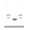
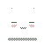

About
About Projects
Projects Games
Games Stories
Stories Store
Store Hobby
Hobby Notes
Notes How-to
How-to
I am a cartoonist and sailor, currently based in the Salish Sea, where the weather is mild and kinder to sailboats. I enjoy drawing with pencils and ballpoint pens, and am fond of lacto-fermentation, bikes, and seabirds.
With the project hundredrabbits, I write about practical knowledge, while producing fun-weird art projects with my best friend and most treasured human Devine.
Living on a boat with the goal of conserving energy use has shaped how I work in a very big way. My workshop is powered by 200W of solar. I prioritize art done on paper. Digital works are done with the tools of my studio and/or with open-source software(Gimp). For more details on how I work, read this article I wrote named Working Offgrid Efficiently
I occasionally make art for magazines, children's books, as well as visuals for software and game. My first self-published game oquonie was nominated for a visual arts award at the 2015 Independent Games Festival in San Francisco. In 2020 Devine & I self-published busy doing nothing, a book documenting my 50-day sail from Shimoda to Victoria. As of December 10th 2024, we have sold 1535 copies, all outside of toxic distribution platforms like Amazon.
๏ View my full list of publications.
๏ Peruse my resume.
๏ See my press appearances.
I spend my days documenting repairs on the boat, making recipes for grimgrains, making comics, and documenting worthwhile seafaring, safety, and communication skills through rabbit waves and hundredrabbits.
Devine & I lived in Japan for two years, and after returning to Canada we decided to try and return there by sailboat. And so, we circumnavigated the Pacific Ocean by sail, passing through Mexico, French Polynesia, Cook Islands, Niue, Tonga, New Zealand, Fiji, The Marshall Islands and Japan.
 I've been making websites since I was a teenager, I would farm free geocities space by hot-linking between mutiple accounts—I've since abandoned that practice. These days, I enjoy making and maintaining simple websites. I manage Grimgrains, 100r.ca and Rabbit Waves.
I've been making websites since I was a teenager, I would farm free geocities space by hot-linking between mutiple accounts—I've since abandoned that practice. These days, I enjoy making and maintaining simple websites. I manage Grimgrains, 100r.ca and Rabbit Waves.
Contact
Contact me for art, cormorant, or website related inquiries. I am not interested in producing NFTs for anyone, nor do I accept crypto payments.
๏ rek ౷ kokorobot · ca.
๏ Follow my RSS.
๏ Find my code projects on Github and Sourcehut(shared account).
๏ Visit Hundred Rabbits, the studio I share with devine.
๏ My main social online presence is on Mastodon. My posts are bridged to Bluesky.
๏ My other web projects include rabbit waves and grimgrains.
favorites
Books
- Roadside Picnic, Arkady and Boris Strugatsky
- Le Péril Bleu, Maurice Renard
- Watership Down, Richard Adams
- Death, the Duck and the Tulip, Wolf Erlbruch
- Big Wolf & Little Wolf, Nadine Brun-Cosme
- North to the Night, Alvah Simon
- On Food and Cooking, Harold McGee
- Akira, Katsuhiro Otomo
- Cyberiad, Stanislaw Lem
- Sailing the Farm, Kenneth Neumeyer
- Persepolis, Marjane Satrapi
- A Sand County Almanac, Aldo Leopold
- Animal Farm, George Orwell and Russel Baker
- One Straw Revolution, Masanobu Fukuoka
- How to Do Nothing, Jenny Odell
- Blade of the Immortal, Hiroaki Samura
- Girl's Last Tour, Tsukumizu
- Dorohedoro, Q. Hayashida
- The Summer Book, Tove Jansson
- We Have Always Lived at the Castle, Shirley Jackson
- The Curve of Time, Wylie Blanchett
- West With the Night, Beryl Markham
- Lord of the Flies, William Golding
- The Stories of Ray Bradbury, Ray Bradbury
- The Tartar Steppe, Dino Buzzati
- Middlemarch, George Eliot
- Girls Last Tour, Tsukumizu
Series
Trigun, The Expanse, Kaamelott, Future Boy Conan, What we Do in the Shadows, Avatar the Last Airbender, Daria, The Good Place, Brooklyn Nine Nine, Flea Bag, Scavengers Reign, I'm a Virgo, Common Side Effects, King of the Hill.
Games
Sword & Sworcery, Legend of Zelda: Windwaker, The Neverhood, Jak & Daxter series.
Music
Lauren Bousfield, Placebo, Circa Survive, Psyclon Nine, Trash 80, Purity ring, Kenshi Yonezu, Floppy, Mew, Oxxxymiron, Immoor, Atreyu, Stromae, Sia, Daniel L.K. Caldwell, Motion City Soundtrack, TOMM¥ €A$H, Miyagi, Wanima, Icon of Coil.
Films
In all, I'm a big fan of work written and directed by Hayao Miyazaki, Jordan Peele, Studio 4°C, Mamoru Hosoda, Boots Riley, etc.
Omoide Poro Poro, Shoplifters, Santa Sangre, The Dresser(1983), Okja, Dinner with Andre, Sorry to Bother You, The Breakfast Club, Akira, Mindgame, Existenz, Prospect, Catsoup, Tampopo, Nausicaa, Redline, Trava Fist Planet, Summer Wars, The Lost Boys, Ginger Snaps, Only Lovers Left Alive, What We Do in the Shadows, Fright Night, Kiki's Delivery Service, Burn After Reading, Return of the Living Dead, Fargo, Sinners, Vampire Hunter D, 28 Days Later, Lost in Translation, Everything Everywhere All at Once, Rocky Horror Picture Show, Blade Runner, Suzume...
Artists
Hiroaki Samura, Q. Hayashida, Junji Ito, Gustave Dore, Matthew Forsythe, Em Caroll, Bob Rafei, Kate Beaton, Kazu Kibuishi, Shaun Tan, Jean Gourmelin.